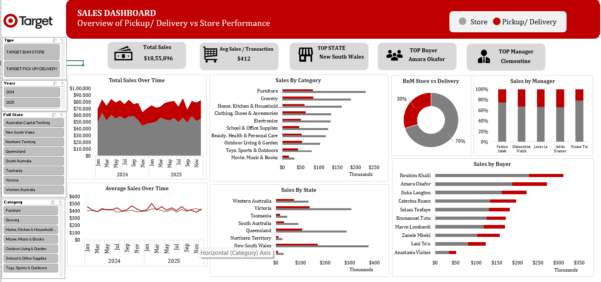
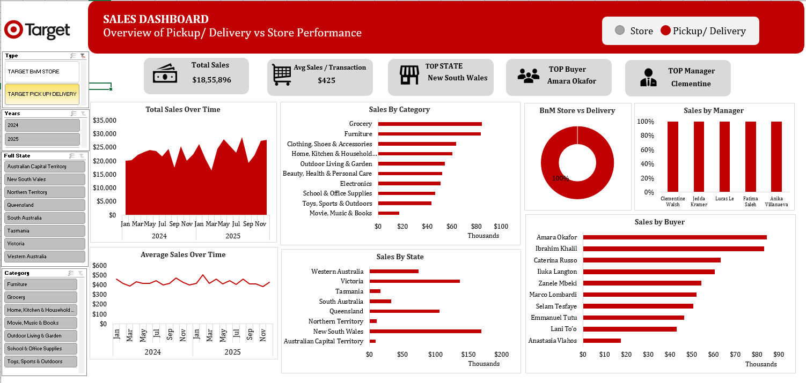

Dashboard

Dashboard Overview – Sales KPIs & Channel Performance Analysis

Skills
Objective
To analyse Target retail sales data and compare business performance across Store and Pickup/Delivery channels, uncovering customer trends, category performance, and regional sales patterns through an interactive Excel dashboard.
Key Performance Indicators
Approach
- Cleaned and structured retail transaction data for analysis.
- Created Pivot Tables to summarise sales by month, category, state, buyer, and manager.
- Built Pivot Charts to visualise trends and compare business performance.
- Designed interactive slicers to filter data by fulfilment channel, category, and region.
- Developed KPI cards to provide instant insights into overall business performance.
- Applied conditional formatting and dashboard design principles to improve usability and reporting.
Tools Used
Microsoft Excel — Pivot Tables, Pivot Charts, Slicers, KPI Cards, Conditional Formatting, Dashboard Design and Data Visualisation.
Sales Performance Analysis
| Analysis Area | Business Value |
|---|---|
| Store vs Pickup/Delivery | Compare channel performance |
| Category Performance | Understand product demand |
| State-wise Contribution | Evaluate regional sales distribution |
| Buyer Performance | Identify high-value customers |
| Manager Performance | Measure operational effectiveness |
| Average Sales Over Time | Understand purchasing behaviour |
Key Insights
- Store and Pickup/Delivery channels exhibited different sales patterns, highlighting the importance of channel-specific analysis.
- Certain product categories consistently contributed a significant portion of overall revenue.
- State-wise analysis revealed differences in regional sales contribution and customer demand.
- A small number of buyers generated a disproportionately high share of revenue, indicating the presence of high-value customers.
- Manager performance varied across locations, providing opportunities for operational benchmarking.
- Interactive slicers enabled dynamic analysis and simplified exploration of trends across multiple dimensions.
Business Recommendations
- Monitor Store and Pickup/Delivery channels independently to optimise channel-specific strategies.
- Focus inventory planning on consistently high-performing categories.
- Allocate resources based on state-level demand and sales contribution.
- Develop loyalty programs targeting high-value customers.
- Use performance metrics to benchmark and improve managerial effectiveness.
- Leverage interactive dashboards for faster and more informed business decisions.
Outcome
Transformed raw Target retail transaction data into a fully interactive Excel dashboard providing insights into sales trends, category performance, customer behaviour, and regional contribution. The dashboard enables stakeholders to explore business performance dynamically and supports data-driven decision-making across multiple dimensions.